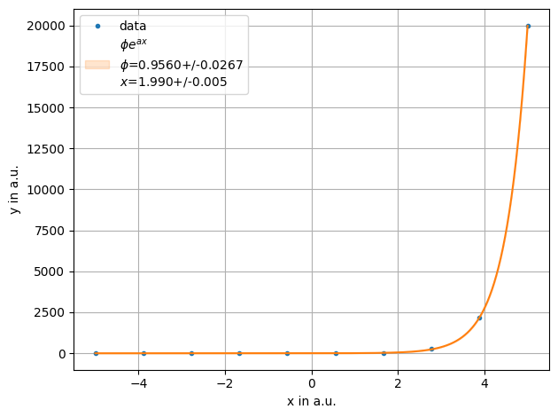
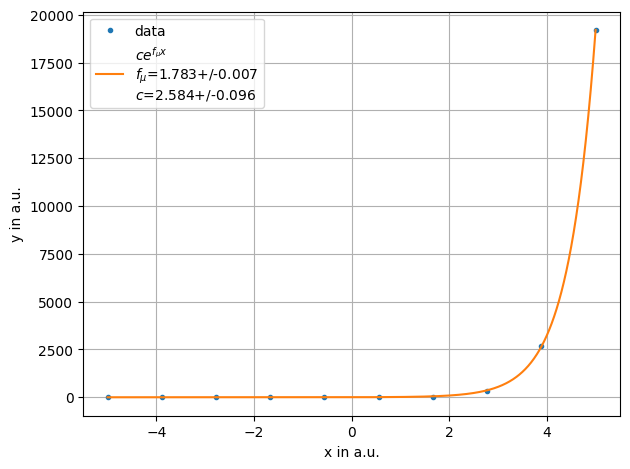
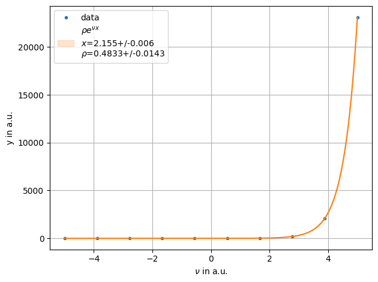
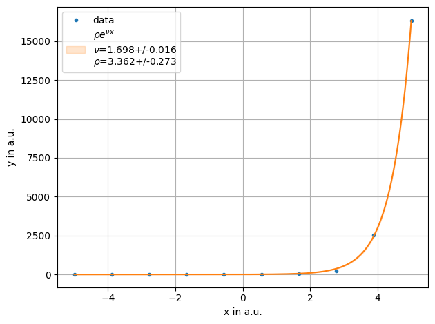

Lambda and string fit functions
Uses the last of the alphabetical sorted variables as the x-axis value unless xvar is set.
[1]:
import numpy as np
from smpl import plot
from smpl import stat
from smpl import functions as f
import uncertainties.unumpy as unp
import smpl
[2]:
x= np.linspace(-5,5,10)
y = stat.noisy(np.exp(2*x))+stat.noisy(x)
ff = plot.fit(x, y,"exp(a*x)*phi" ,xvar="a", fmt='.', label='data', xaxis="x in a.u.",yaxis="y in a.u.",sigmas=1)

lambda fit does not work with sigma=N, as it needs unp.exp
[3]:
x= np.linspace(-5,5,10)
y = stat.noisy(np.exp(2*x))+stat.noisy(x)
ff = plot.fit(x, y,lambda x,f_mu,c: unp.exp(x*f_mu)*c , fmt='.', label='data', xaxis="x in a.u.",yaxis="y in a.u.")

[4]:
x= np.linspace(-5,5,10)
y = stat.noisy(np.exp(2*x))+stat.noisy(x)
ff = plot.fit(x, y,lambda x,nu,rho: unp.exp(x*nu)*rho,xvar="nu" , fmt='.', label='data', xaxis="$\\nu$ in a.u.",yaxis="y in a.u.",sigmas=1)

[5]:
x= np.linspace(-5,5,10)
y = stat.noisy(np.exp(2*x))+stat.noisy(x)
def e(nu,x,rho):
return unp.exp(x*nu)*rho
ff = plot.fit(x, y,e ,xvar="x", fmt='.', label='data', xaxis="x in a.u.",yaxis="y in a.u.",sigmas=1)

[ ]:
[ ]:
[ ]:
[ ]:
[ ]: